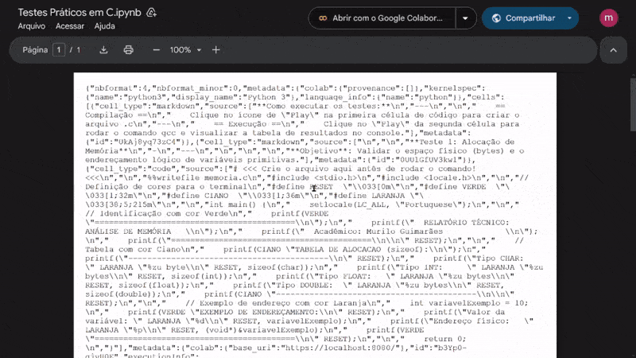

Como abrir o Laboratório
Após garantir que você está conectado à sua conta Google, o processo para visualizar o código de forma organizada é simples. Siga os passos indicados abaixo para sair da visualização de código bruto (JSON) para a interface interativa do Colab.

Figura 2: Procedimento para instalar a interface do Colaboratory.
Passo a Passo:
No topo da página do arquivo, localize o botão central "Abrir com".
Clique no botão "+ Conectar mais aplicativos" para abrir a página de aplicativos.
Em seguida, pesquise por "Colaboratory" na barra de busca.
Selecione o aplicativo e clique em "Instalar" para adicioná-lo à sua lista de aplicativos disponíveis.
Após a instalação, recarregue a página e volte ao arquivo, clique novamente no botão "Abrir com", onde agora a opção "Google Colaboratory" estará disponível para seleção.

Figura 3: Abrindo o arquivo no Google Colab.